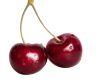
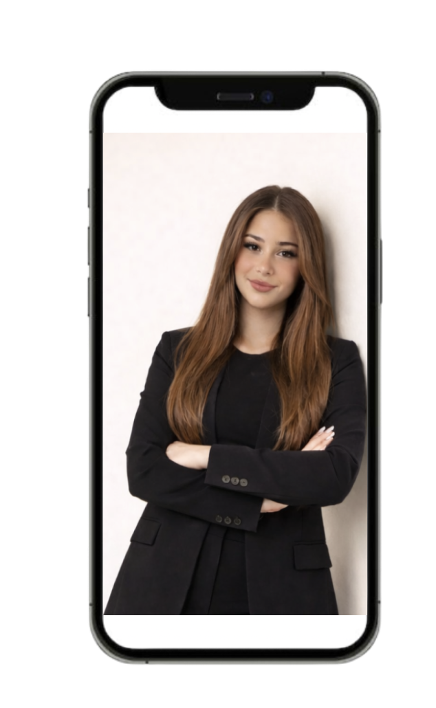

Aja al asadi
My name is Aja, im 23 years old and
I design digital solutions with a focus on aesthetics and functionality!


My name is Aja, im 23 years old and
I design digital solutions with a focus on aesthetics and functionality!

Hi, I'm Aja!
I'm a Multimedia Design student at Zealand, currently based in Copenhagen.
I'm passionate about digital design, visual expression, and creating aesthetic yet meaningful solutions. I enjoy combining creativity with structure and learning how design and code work together.
I'm a social and curious person who loves collaborating on creative ideas and exploring new cultures and inspiration through travel.
Interests:
UX/UI · Graphic Design · Branding · Web Design · Social media managing